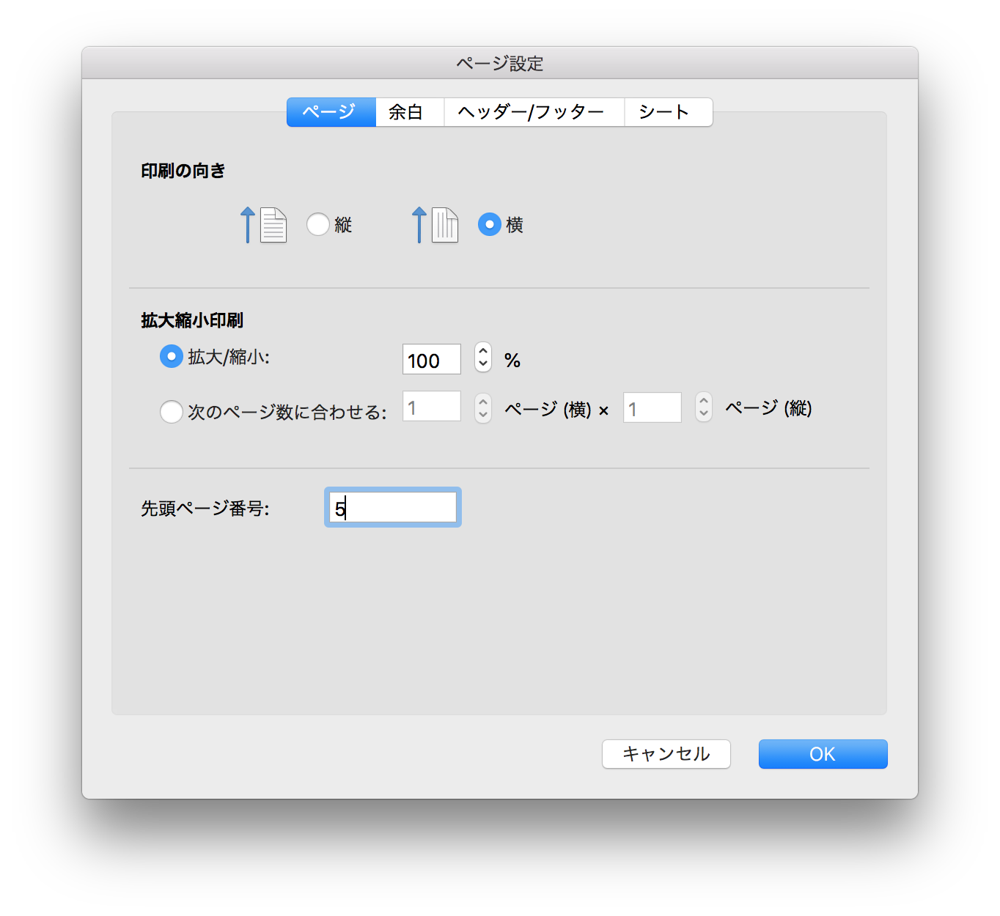
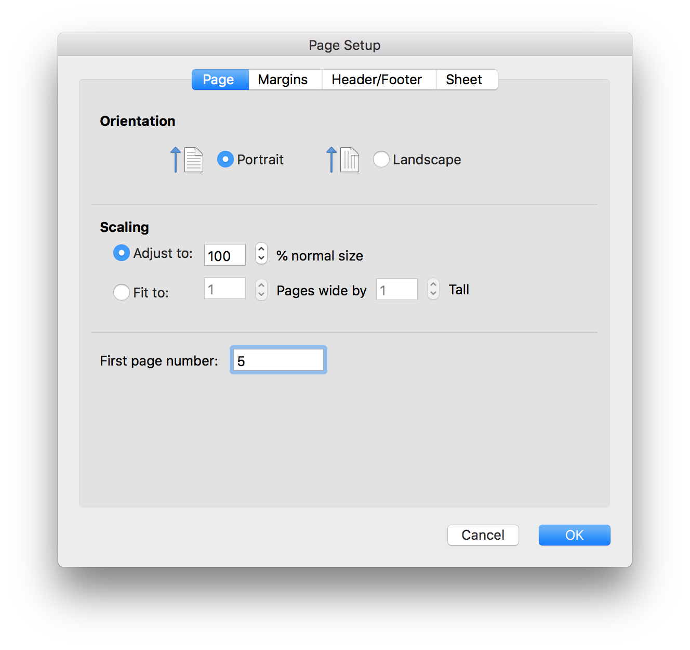

[English Follows]
こんにちは、Office サポートの山本です。
本記事では Excel 2016 for Mac で [ページ設定] で設定した [先頭ページ番号] の数字から、印刷時にページ番号が開始しない動作についてご説明します。
現象
macOS 版の Excel 2016 において、以下の手順で先頭ページ番号を指定し印刷した場合には、指定した先頭ページ番号が有効とならず、必ず “1” から開始されます。
- 手順
1. “Excel for Mac” を起動しブックを開きます。
2. [ファイル] - [ページ設定] の [先頭ページ番号] にて、以下のように “1” 以外の番号を設定します。

3. ブックのフッター等に、ページ番号を挿入します。
指定した先頭ページ番号からページ番号が挿入されます。
4. [印刷] を実行します。
5. 結果、ページ番号が指定した先頭ページ番号ではなく “1” から開始します。
原因
現時点の Excel 2016 for Mac の機能として、[ファイル] - [ページ設定] から [先頭ページ番号] を指定した場合にも、この設定値が有効とならないことが原因です。
対処方法
現状ご案内可能な回避策としては、[先頭ページ番号] を利用せずに、手動でページ番号を設定する方法にてご対応ください。
例) 先頭ページ番号を 1+n ページ目から開始したい場合、ブックのフッター等で &[ページ番号] の後に “+n “ を追加します。
Page &[ページ番号]+n
今後の修正予定について
本現象については 2018 年 8 月 23 日において修正対応の予定はございません。
今後 [ページ設定] 画面の変更や、機能追加などが行われた場合には、本ブログにて随時ご案内させていただく予定です。
本情報の内容 (添付文書、リンク先などを含む) は、作成日時点でのものであり、予告なく変更される場合があります。
[English]
“First page number” is not effective when printing on Excel 2016 for Mac
Symptom
If you print a book on Excel 2016 for Mac by using First page number option, the expected page number is not printed and the first page number is always “1”.
- Steps
1. Start “Excel for Mac” and open a book.
2. Select [File] - [Page Setup] and set any number (besides “1”) on [First page number].
 3. Insert the page number to the book (e.g. footer) and check the expected number is displayed.
4. Select [Print].
5. Check the printed page number and the first page number is “1”.
Cause
[File] - [Page Setup]- [First page number] is not available as of now.
Workaround
Set the page number manually.
e.g. If you want to set the first page number as 1+n, type “+n “ after the &[Page] code in the footer.
Page &[Page]+n
Status
There is no plan for fix as of 8/23/2018.
We will update in this blog if there are changes in [Page Setup] page or new feature is added.
Information in this article (including attached documents and links) is as of date of article’s creation.
Please note that this may be changed without notice.